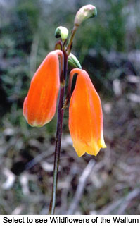

- Showing and telling
- The way ahead
- Wildflowers of the wallum landscape
- Some birds of the Sunshine Coast
Becoming as passionate about photography as she was about painting, Kathleen McArthur used her photographs to good effect to illustrate the many talks she gave on behalf of herself and WPSQ.
In the Caloundra Weekly of 1 September 1966 Kathleen noted that, ‘The talks on birds and wildflowers arranged for the August school holidays proved most popular. The Wildflower Room at Midyim, King’s Beach, was filled to capacity on four occasions. Of the two hundred who attended approximately half were children’. The talks were free and of ‘inestimable value to the community’.
© WPSQ, Sunshine Coast & Hinterland Inc
Caloundra Weekly 7 February 1964
Wildlife and Landscape
THE WAY AHEAD
The talks on birds and wildflowers arranged for the August s chool holidays by the Caloundra Branch of the Wildlife Preservation Society of Queensland proved most popular. The Wildflower Room at Midyim, Kings Beach, where they were given, was filled to capacity on four occasions. Of the 200 who attended, approximately half were children, which was most encouraging to the organisers. Without the interest of the adults, the children could not have been present.
chool holidays by the Caloundra Branch of the Wildlife Preservation Society of Queensland proved most popular. The Wildflower Room at Midyim, Kings Beach, where they were given, was filled to capacity on four occasions. Of the 200 who attended, approximately half were children, which was most encouraging to the organisers. Without the interest of the adults, the children could not have been present.
Also in the audiences was a small percentage of school teachers. Next year, an entirely new syllabus on natural science teaching will be introduced in Queensland Primary Schools. It contains a new concept for teaching in Queensland for it is aimed not at the teaching of a lot of facts, but to instill in young children an interest in the world around them; an appreciation of their own local wildlife and landscape. The benefits to be gained from this new syllabus will be quite dependant on the sympathy, understanding and broad knowledge of the teachers. We feel that the teachers who attended these talks would have gained much assistance from them. Because of the neglect of this subject in the past, very few of our teachers are competent to lead their pupils. The sins of our fathers! (Sins of omission.)
Normally, the knowledge we acquire may be found in a reference library, but not only are such libraries inadequate in this district, but works of reference for Queensland natural history are extremely few.
We cannot escape the fact that interest in our State wildlife and landscape has been inexcusably neglected. The introduction of a syllabus for which little teacher preparation has been made will be slow in being effective. This is a time when the individual who has concerned himself with these matters is going to be invaluable to society. Some schools, such as Kenilworth, as a precious model, will get off to a good start because individual teachers, past and present, have used the very methods suggested by the new syllabus.
The primary aim of the Wildlife Preservation Society of Queensland is education. In the study of our local flora and fauna, the Caloundra Branch can provide a lead for both teachers and students. We already have a good collection of colour slides of natural history subjects to which we are adding continually. We have competent lecturers and we offer a free service of inestimable value to the community.
Kathleen McArthur
Wildlife Preservation Society of Queensland, Caloundra Branch
Reproduced with permission of Sunshine Coast Newspapers
© WPSQ, Sunshine Coast & Hinterland Inc
WILDFLOWERS OF THE WALLUM LANDSCAPE
[Undated notes to accompany slide photographs, presented during the 1960s and 70s as educational shows for the public, school students and WPSQ members]
Wallum is a Wide Bay Aboriginal word for Banksia aemula, now used for the high rainfall, low fertility lands of Australia’s coast. For those of us who know this country and are fond of it, it is distressing to see so much attacked by bulldozers in the vain hope that fortunes will be made. This has yet to be proved. Little more can be done by wildlife conservators than appeal to the Government to save some blocks as National Parks, Wildflower Reserves or…something. Politics and economics aside, I find it really disgusting to hear our political leaders, premiers and cabinet ministers refer to this fascinating type of country, which may yet yield something of value to humanity––who knows––referred to as ugly, wasteland, useless rubbish. It is our natural heritage; some people might say ‘national heritage’, but it belongs to all people of our time, not just us. We have been given the responsibility of looking after it because we are living here.
When white people first came to Australia everything was for the taking, with no thought that they might be reducing the fertility of the land so much that within a hundred years their grandchildren would not be able to make a living from it. It was all––grab what you can! There are many people in power today who are of the same greed and stupidity. The earth is our mother; we were born of her and must return to her what we take. Judith Wright says this much better in her poem:
The Flame-Tree
How to live, I said, as the flame-tree lives?
––to know what the flame-tree knows; to be
prodigal of my life as that wild tree
and wear my passion so?
That lover’s knot of water and earth and sun,
that easy answer to the question baffling reason,
branches out of my heart this sudden season.
I know what I would know.
How shall I thank you, who teach me how to wait
in quietness for the hour to ask or give:
to take and in taking bestow, in bestowing live:
in the loss of myself, to find?
This is the flame-tree; look how gloriously
that careless blossomer scatters, and more and more.
What the earth takes of her, it will restore.
These are the thanks of lovers who share one mind.
[from The Flame-Tree, in Judith Wright A Human Pattern: Selected Poems, 1996, Sydney, ETT Imprint]
© WPSQ, Sunshine Coast & Hinterland Inc